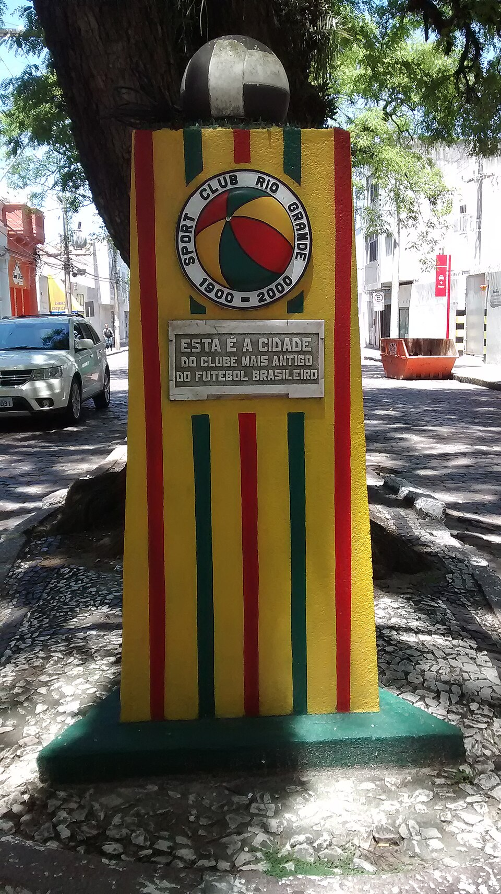

Há uma diferença enorme entre simplesmente ser um clube centenário e ter surgido quando o próprio futebol brasileiro ainda começava a organizar seus primeiros times. É justamente nesse segundo grupo que está o Sport Club Rio Grande.
Fundado na cidade de Rio Grande, no extremo sul do Rio Grande do Sul, o “Vovô” atravessou diferentes eras do esporte e permanece em atividade mais de um século depois. A condição de clube de futebol mais antigo do Brasil está diretamente ligada à própria natureza de sua fundação e à continuidade da instituição. Até a Associação Atlética Ponte Preta, fundada poucas semanas depois, em 11 de agosto de 1900, apresenta o Rio Grande em sua história oficial como o primeiro e a Macaca como o segundo clube de futebol fundado no país.
Mas reduzir o Rio Grande à pergunta “qual é o clube mais antigo do Brasil?” significa perder a parte mais rica dessa história. O clube participou da difusão do futebol pelo território gaúcho, fez exibições em uma época na qual encontrar adversários já era um desafio, esteve ligado a um episódio decisivo para a fundação do Grêmio e, décadas depois, conquistou o Campeonato Gaúcho derrotando o Internacional na decisão.
Em dimensão internacional, essa busca pelas raízes do esporte se conecta à história do Sheffield FC , reconhecido como o clube mais antigo do mundo. No Brasil, o Rio Grande ocupa posição semelhante como uma instituição que sobreviveu à passagem do futebol amador para um esporte profissional, nacional e bilionário.
Antes de 1900 já existiam no Brasil associações esportivas nas quais o futebol chegou a ser praticado. Algumas haviam sido criadas originalmente para outras modalidades e incorporaram o jogo posteriormente; outras tiveram departamentos de futebol que deixaram de existir.
O caso do Rio Grande é diferente: trata-se de uma agremiação criada no começo do século XX diretamente ligada à organização e à prática do futebol e que continuou existindo.
O reconhecimento ganhou também uma dimensão institucional. O acervo histórico do Rio Grande registra que, em julho de 1975, a então Confederação Brasileira de Desportos, a CBD, antecessora da atual CBF, anotou em seus registros o Sport Club Rio Grande como o clube de futebol mais antigo do país após receber documentação enviada pela instituição gaúcha.
Essa relação histórica seria eternizada no calendário esportivo brasileiro.
A data comemorativa
O Dia Nacional do Futebol é celebrado justamente em 19 de julho por causa da fundação do Sport Club Rio Grande.
A data foi criada em 1976 pela então CBD como uma alusão ao nascimento do clube gaúcho. O próprio governo federal já registrou oficialmente a ligação: o 19 de julho foi escolhido porque o Rio Grande, fundado nessa data em 1900, era reconhecido como o primeiro clube de futebol brasileiro ainda em atividade.
Isso transforma a fundação do clube em algo que ultrapassa a própria história da instituição. Todos os anos, quando o futebol brasileiro é celebrado oficialmente em 19 de julho, a escolha da data remete diretamente ao clube da cidade de Rio Grande.
Pouquíssimas agremiações brasileiras possuem uma conexão institucional tão direta com uma efeméride nacional do esporte.
O nascimento do clube
A localização de Rio Grande ajuda a compreender por que uma das primeiras experiências organizadas de futebol do país apareceu justamente ali.
No começo do século XX, a cidade já tinha forte atividade portuária e contato constante com estrangeiros. O ambiente reunia brasileiros e comunidades de origem europeia, especialmente alemães e ingleses. O relato histórico preservado pelo clube descreve uma sociedade local marcada por essa circulação internacional e por uma intensa atividade comercial ligada ao porto.
Foi nesse cenário que jovens interessados no esporte passaram a organizar a criação de uma entidade destinada ao futebol.
Um personagem central foi Johannes Christian Moritz Minnemann, alemão nascido em Hamburgo. Ele conhecia o jogo e suas regras e teve papel importante na organização das reuniões, na documentação inicial e na mobilização do grupo que fundaria o clube.
Arthur Cecil Lawson também ocupa posição fundamental nessa história. Nascido em Rio Grande, Lawson havia estudado na Inglaterra, onde teve contato direto com o futebol e atuou como goleiro. Ao retornar à cidade em 1900, trouxe consigo experiência com o esporte e material para sua prática. Henrique Buhle foi outro nome ligado às movimentações que antecederam a fundação.
Um dos detalhes que torna a origem do Rio Grande mais interessante é que o 19 de julho foi o resultado de um processo de organização iniciado dias antes.
O registro histórico do clube aponta uma reunião programada inicialmente para 14 de julho de 1900. Uma nova tentativa estava prevista para o dia 17. A formalização acabou ocorrendo em 19 de julho, no Clube Germânia, quando foi lavrada a fundação do Sport Club Rio Grande.
A ata reuniu participantes de diferentes origens. Entre os nomes preservados nos registros aparecem Johannes Minnemann, Arthur Cecil Lawson, Henrique Buhle, Rudolf Dietiker, Sinclair W. Robinson, M. E. Castro, G. Kladt, Walter Gerdau e Boje Schmidt, entre outros.
Rudolf Dietiker foi escolhido como primeiro presidente. Lawson assumiu funções ligadas à organização esportiva, além de atuar como goleiro e capitão. Minnemann se consolidou como uma das figuras centrais da fundação e da organização inicial.
Ou seja: por trás da simples data de 19 de julho de 1900 existe uma estrutura de personagens, reuniões e intercâmbio cultural que ajuda a explicar por que o futebol encontrou terreno fértil naquela cidade portuária.
A dificuldade de praticar o esporte
Nos primeiros anos, um dos desafios era básico para qualquer clube de futebol: encontrar outros times.
O Rio Grande mantinha seus próprios quadros para a prática do esporte. Em 1901, porém, aconteceu um episódio particularmente simbólico: partidas contra uma equipe formada por tripulantes da canhoneira britânica HMS Nymphe.
Os registros históricos apontam um empate por 2 a 2 em 19 de maio de 1901 e uma vitória do Rio Grande por 2 a 1 quatro dias depois. Os jogos aconteceram em um período no qual o futebol organizado ainda estava longe de possuir uma estrutura regular de campeonatos no país.
O episódio ajuda a dimensionar o ambiente dos primeiros anos. Hoje, um clube planeja sua temporada a partir de calendários estaduais e nacionais. Naquele momento, uma embarcação estrangeira que chegava a uma cidade portuária podia oferecer a oportunidade de enfrentar um adversário diferente.
As cores que viraram identidade do Vovô
A identidade visual que acompanha o Rio Grande foi definida ainda no começo de sua história.
Em assembleia realizada em 12 de julho de 1901, ficaram estabelecidas como cores do clube o verde, o vermelho e o amarelo, seguindo as cores da bandeira do Rio Grande do Sul. Décadas de transformações depois, a combinação permanece como uma das características mais reconhecíveis da instituição.
O distintivo também carrega uma particularidade histórica. O clube registra que Arthur Lawson promoveu posteriormente a troca do escudo anterior por um símbolo em formato de bola, elemento que permaneceu ligado à identidade do Rio Grande.
É uma associação visual coerente com a própria origem: um clube cuja identidade institucional se confunde com os primeiros tempos da bola no país.
A viagem que entrou na história da fundação de outro clube
Talvez nenhum episódio mostra melhor a influência do Sport Club Rio Grande na expansão do futebol gaúcho do que o que aconteceu em Porto Alegre em setembro de 1903.
O próprio Grêmio registra oficialmente que uma equipe do Rio Grande esteve na capital para uma exibição em 7 de setembro daquele ano. Entre os espectadores estava Cândido Dias da Silva, que possuía uma bola de futebol. Durante a apresentação, a bola utilizada pelos jogadores esvaziou, e Cândido emprestou a sua para que a demonstração pudesse continuar.
Depois do jogo, segundo a história oficial gremista, Cândido recebeu dos integrantes da equipe de Rio Grande informações sobre o esporte e sobre como organizar um clube.
Oito dias depois, em 15 de setembro de 1903, 32 homens se reuniram no Salão Grau e fundaram o Grêmio Foot-Ball Porto Alegrense.
Isso coloca o Rio Grande em uma posição muito mais importante do que a de mero pioneiro cronológico. Uma exibição de seu time está diretamente inserida na narrativa oficial de nascimento de um dos maiores clubes do futebol sul-americano.
O Vovô não apenas estava presente nos primeiros anos do futebol gaúcho. Ele ajudava o esporte a circular.
O título que foi muito mais do que uma linha na lista de conquitas
Se a fundação colocou o Rio Grande na história, a campanha do Campeonato Gaúcho de 1936 deu ao clube sua principal conquista dentro de campo.
O formato do Estadual daquele período era muito diferente do atual. Campeões de diferentes regiões avançavam para a disputa do título gaúcho. O Rio Grande representou a Zona Litoral, enquanto Internacional, Novo Hamburgo, Riograndense de Santa Maria e Botafogo de São Gabriel estavam entre os classificados de outras regiões.
Há ainda uma curiosidade importante: embora oficialmente referente à temporada de 1936, a fase decisiva terminou somente em janeiro de 1937.
Na semifinal, disputada em 14 de janeiro, o Rio Grande venceu o Novo Hamburgo por 5 a 2 e garantiu lugar na decisão. O adversário seria o Interl.
A primeira partida da final foi realizada em 17 de janeiro. O Rio Grande venceu o Colorado por 3 a 2. Quatro dias depois, em 21 de janeiro, voltou a superar o Internacional, desta vez por 2 a 0. As duas vitórias confirmaram o primeiro e único título do Rio Grande na elite estadual.
Entre os jogadores registrados naquele time campeão aparecem Munheco, Fruto, Cazuza, Juvêncio, Chinês, Ernestinho, Carruíra, Souza, Marzol e Pesce, além de outros atletas utilizados na campanha.
O título ganha dimensão ainda maior quando inserido na história do Campeonato Gaúcho. Em um estado que construiria algumas das rivalidades e potências mais importantes do futebol brasileiro, o Rio Grande conseguiu colocar seu nome definitivamente entre os campeões.
A história competitiva do clube
O Gauchão de 1936 é a conquista mais importante, mas não foi o único título estadual relevante do Rio Grande.
Em 1962, o clube venceu o Torneio de Acesso, competição correspondente ao segundo nível estadual daquele período.
Mais de meio século depois, veio outro capítulo.
Em 2014, o Vovô conquistou a então Segunda Divisão – Série B do Campeonato Gaúcho, equivalente ao terceiro nível estadual. Na decisão contra o Guarani de Venâncio Aires, venceu a primeira partida por 1 a 0 no Estádio Arthur Lawson e empatou a volta por 1 a 1 no Edmundo Feix, resultado que confirmou o título.
Assim, considerando as estruturas e nomenclaturas utilizadas em cada época, o clube possui conquistas nos três níveis do futebol estadual: a elite em 1936, o acesso em 1962 e o terceiro nível em 2014.
O centenário levou o Rio Grande de volta à elite
No ano em que completou um século de existência, o clube foi convidado pela Federação Gaúcha de Futebol para disputar novamente a primeira divisão estadual. A edição recebeu inclusive a denominação “Copa Sport Club Rio Grande – Um Século de Futebol”, em homenagem ao centenário do Vovô.
O retorno teve caráter comemorativo. Depois daquela participação, o clube voltou às divisões inferiores do futebol gaúcho.
A passagem de 2000 acabou se tornando a última presença do Rio Grande na primeira divisão estadual até hoje, criando um contraste expressivo: o clube que ajudou a espalhar o futebol pelo estado passou a disputar, no século XXI, competições bem distantes do nível ocupado pelas principais potências gaúchas.
O nome da casa do clube
A ligação entre passado e presente também aparece no estádio utilizado pelo Rio Grande.
A casa do clube leva o nome de Arthur Lawson, um dos personagens fundamentais de sua fundação. O nome não é apenas uma homenagem protocolar. Lawson esteve envolvido na prática do futebol, na gestão da instituição e na expansão do esporte para outras cidades do estado.
O estádio recebeu sistema de iluminação em 2009 e passou por ampliação de arquibancadas a partir de 2011, segundo o acervo histórico do clube.
É ali que o Vovô continua escrevendo uma trajetória competitiva muito diferente daquela dos grandes clubes nacionais, mas carregando um patrimônio histórico que praticamente nenhum adversário pode reproduzir.
A situação atualmente
A distância da elite não significa que o clube tenha virado apenas uma instituição memorial.
Em 2026, o Sport Club Rio Grande está inscrito no Gauchão Série B, atualmente o terceiro nível do futebol estadual. A Federação Gaúcha de Futebol colocou o Vovô entre os dez participantes da competição.
A edição de 2026 passou a ser disputada na categoria Sub-23. Na primeira fase, os dez clubes se enfrentam em turno único, com nove partidas para cada equipe. Os dois primeiros avançam diretamente às semifinais, enquanto os times entre terceiro e sexto disputam playoffs pelas outras vagas.
É uma realidade esportiva muito distante do Rio Grande campeão estadual de 1936. Ao mesmo tempo, é justamente a permanência em competições oficiais que mantém viva uma história iniciada quando não existiam Campeonato Brasileiro, Copa do Brasil, Libertadores ou sequer um sistema estadual semelhante ao atual.
O lugar que ocupa vai além dos títulos
O valor histórico do Sport Club Rio Grande aparece com mais clareza quando todas essas peças são colocadas juntas.
Não se trata apenas de um clube fundado em 1900.
É uma instituição cuja data de nascimento está ligada ao Dia Nacional do Futebol; cuja história envolve Johannes Minnemann e Arthur Lawson nos primeiros anos de organização da modalidade; cujo time realizou exibições pelo Rio Grande do Sul quando o futebol ainda procurava espaço; e cuja passagem por Porto Alegre aparece diretamente na narrativa oficial da fundação do Grêmio.
Dentro de campo, também não vive apenas de antiguidade. Foi campeão gaúcho derrotando o Internacional duas vezes na decisão, venceu uma competição de acesso em 1962 e voltou a conquistar um título estadual em 2014.
A realidade atual é modesta quando comparada à dimensão comercial do futebol brasileiro. Mas talvez seja exatamente esse contraste que torne a história do Vovô tão singular.
O Sport Club Rio Grande nasceu antes de quase todas as estruturas que hoje parecem inseparáveis do futebol. Sobreviveu ao amadorismo, à profissionalização, às mudanças de regulamento, às transformações econômicas e ao surgimento de clubes que se tornariam gigantes nacionais e internacionais.
Mais de um século depois, ainda entra em campo.
Por isso, quando a pergunta é qual é o clube de futebol mais antigo do Brasil em atividade, a resposta leva a Rio Grande. Mas quando a pergunta é por que essa história realmente importa, a resposta é muito maior: o Vovô não apenas assistiu ao nascimento do futebol brasileiro. Em diferentes momentos, ajudou a construí-lo.